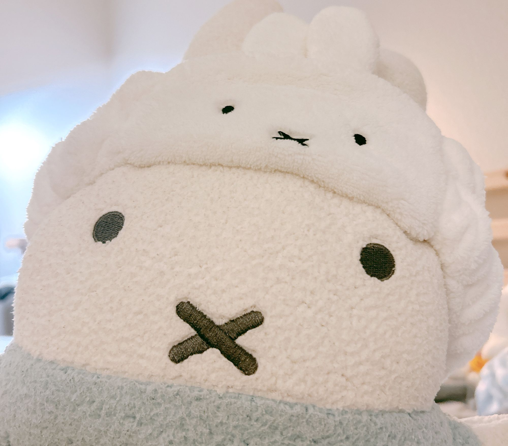

Code gave me systems. Translation gave me feeling. Design is the space between, where I find my balance.
Stuck in code and lost in
translation, I found myself
in design.

- Based in
- Pasadena, California
- Languages
- Mandarin (native)
English (advanced)
Japanese (advanced) - Contact
- Email
LinkedIn
Instagram
CV
Code gave me systems; translation gave me feeling. I start by observing everyday things, from a single leaf to an endless road, and follow my curiosity into the stories behind them. Systems are my roots; feeling is what blooms on top.
Working across Chinese, English and Japanese taught me that meaning depends on context and rarely survives a literal translation. Programming gave me the other side: a way to think systematically and find the logic beneath things. I build structures to make sense of what I observe, then look again to see where they fall short, or where meaning begins to shift.
What interests me most is what happens when an idea moves from one system into another. Rather than offering a single answer, I want my work to reveal overlooked perspectives and invite people to see familiar things differently.
ArtCenter College of Design
Master of Fine Arts in Graphic Design (candidate), Pasadena, CA
Thesis in progress: Data visualization is never neutral.
Peking University
Master of Japanese Translation and Interpreting, Beijing
Thesis: a comparative study of Chinese translations of Kajii Motojirō’s “Lemon.” Designed and printed a monthly eight-page booklet introducing new Japanese books, with bilingual excerpts and short promotional videos.
East China Normal University
Bachelor of Engineering in Software Engineering, Shanghai
Thesis: design and implementation of a personal life assistant app for Android. Exchange student at the University of California, Berkeley, Jan–May 2020.
Design software
Illustrator, InDesign, Photoshop, Nomad Sculpt, Figma
Programming
C, C++, C#, JavaScript, HTML, CSS, Vue.js, React, SQL
AI tools
Claude Code, ChatGPT, Midjourney, Adobe Firefly, Figma AI
Skills
Editorial Design, Brand Identity, Exhibition Design, Screen Printing, Letterpress, Bookbinding, 3D Printing, Frontend Development
Teaching Assistant
ArtCenter College of Design
Assist Professor Brad Bartlett with Graduate Seminar 3 in the Graphic Design Master of Fine Arts program. Give students feedback on their research and projects, and manage course communication.
Director of Online Auction, Artwork Department
Shanghai Dagong Auction Co., Ltd.
Managed weekly inventory and edited artwork listings for online auctions. Designed weekly auction posters, and promotional posters, videos and catalogs for two large offline auctions each year.
Japanese Translation Intern
Shanghai Cangyuan Industrial Co., Ltd.
Translated 150,000 words of official documents between Chinese and Japanese.
Editorial Intern, Children’s Department
Beijing Science and Technology Publishing Co., Ltd.
Recommended five books a day to expand the catalog, managed weekly photography and social media on RED (Xiaohongshu), and translated between Chinese, Japanese and English, averaging 4,000 words a day.
Japanese Language Intern
Shanghai Soar Information Technology Co., Ltd.
Wrote promotional copy across 500 templates a day, updated merchant information, and helped a senior specialist redesign the login page in Figma.
Frontend Intern
Shanghai Fuao Construction Technology Co., Ltd.
Designed and built frontend pages in Vue.js and maintained the C++ system of a medical platform.
Duane and Betty Bohnstedt Endowed Scholarship
ArtCenter College of Design
ArtCenter Graduate Scholarship
ArtCenter College of Design
Awarded each term.
Gallery Exhibition
ArtCenter College of Design
Posters for Harbor Freight, Digital Detox and Mori selected for exhibition in the ArtCenter gallery.
Volunteer Editor
Peking University Japanese Group
Translated the Japanese children’s book Kirakira Sagashi into Chinese (published June 2024), and managed the group’s WeChat account and monthly newsletter.
Playground
Side projects, leftovers and happy accidents. Poke at anything that catches your eye.